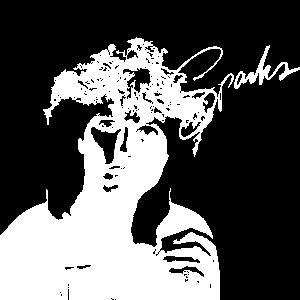

 Fist off, if you don't know who Sparks are, don't worry, they are best known for the song "This Town Ain't Big Enough for Both of Us", that got to number two in the UK singles chart. Also one of the members of the band had a Hitler moustache - the singer is also a guy.
After stealing my parent's record collection, I found Sparks - Introducing Sparks (1977), and while first playing the record I felt a mixture of disgust, enjoyment, and not quite understanding what was going on (much like Tiny Tim's "God Bless Tiny Tim").
The album has quite a few good tracks to it, it even has a few earworms in it like "Occupation", a song that its name is on the can. Also, this may just be me, but near the end of the song that lists off jobs, I swear that I hear the line "baby killers".